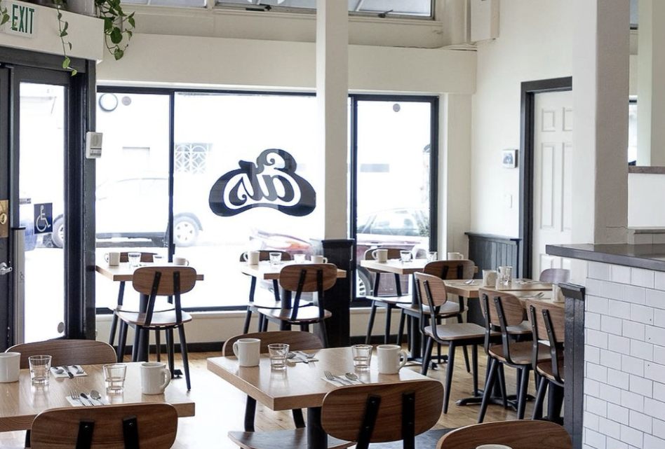

Eats
My go-to brunch spot near USF for chill mornings and good food.
Why I Love Eats
Honestly, Eats is one of my go-to brunch spots near USF. I've been here so many times — whether it's grabbing coffee before class or meeting friends on a slow weekend morning.
What I really like about Eats is how simple but good everything is. It's not overly fancy, but the food is always consistent and the vibe is super relaxed. It feels like one of those places you can just sit and not feel rushed.
It's also really close to campus, which makes it perfect when you don't want to go too far. And if you go on the weekend, you can even walk around the nearby farmers market after brunch, which honestly makes the whole experience even better.
If you're looking for a chill brunch spot that's actually worth it, this is definitely one I'd recommend.
Pros
- Close to USF
- Chill and cozy vibe
- Affordable
- Good for casual hangouts
Cons
- Busy on weekends
- Can be slow sometimes
- Limited seating
Menu: Avocado toast, waffles, eggs benedict, coffee
Price: $10–20
Location: Clement Street, San Francisco